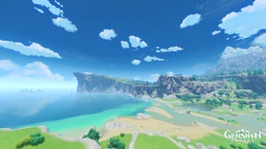
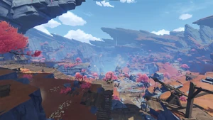

Nações
×
Mondstadt
É uma das sete nações de Teyvat, e a primeira nação em que o Viajante começa a busca por seu irmão(a).
É a nação que venera Barbatos, o Arconte Anemo e Deus da Liberbade.

A Cidade de Mondstadt, também conhecida como Coroa do Norte é a principal cidade da nação de Mondstadt.
×
Liyue
Liyue é uma das sete nações de Teyvat. É a nação que venera Morax, o Arconte Geo e Deus dos Contratos

Um porto próspero localizado ao leste de Teyvat.
×
Inazuma
Inazuma é uma das sete nações de Teyvat. É o arquipélago que venera a Shogun Raiden,
a atual Arconte Electro e Deusa da Eternidade, que também é a líder de seu corpo governante, o Shogunato de Inazuma.
O Grande Santuário Narukami fica localizado no pico da Montanha Yougou e é o maior santuário de Inazuma, protegendo a Sakura Sagrada e proporcionando o conforto e a paz necessários ao povo de Inazuma nestes tempos difíceis.
×
Sumeru
Sumeru é uma das sete nações de Teyvat. É a nação que venera a Lorde Menor Kusanali, atual Arconte Dendro e Deusa da Sabedoria. É reconhecida como centro do aprendizado acadêmico e abriga a Academia Sumeru.
Vanarana em Genshin Impact - localização no norte Sumeru, que é habitado por muitas criaturas que se autodenominam aranars. Para ter acesso à Estátua do Arconte, localizada no mundo místico, o Viajante terá que conquistar sua confiança e passar no teste. Além disso, o local possui dois estados, real e sonho
×
Fontaine
Fontaine é uma das sete nações de Teyvat. É a nação que venera Focalors, a atual Arconte Hydro e Deusa da Justiça.
Ao explorar a área da Floresta Erinyes em Fontaine, você pode encontrar e desbloquear 8 baús preciosos. Um deles é uma missão e é concedido por completar com sucesso a tarefa Wild Fairy Erinyes, e para abrir o outro você precisa coletar chaves de cofre simples. O resto são recompensas por resolver vários enigmas na floresta.
Banner Atual